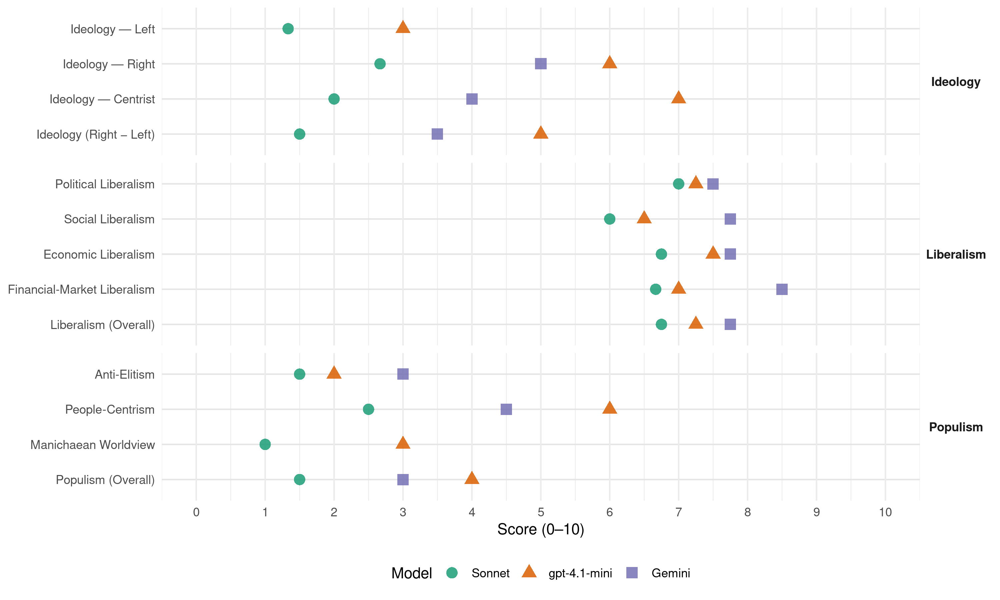

SDS (Slovenia, 2008)
manifesto_id 97330_200809
Get full text: This site shows derived annotations and short verbatim quotes only. The full manifesto text is © Manifesto Project / WZB — obtain it via manifesto-project.wzb.eu using the manifesto_id above.
Headline scores
| Dimension | Sonnet | gpt-4.1-mini | Gemini |
|---|---|---|---|
| Populism (Overall) | 1.5 | 4.0 | 3.0 |
| Anti-Elitism | 1.5 | 2.0 | 3.0 |
| People-Centrism | 2.5 | 6.0 | 4.5 |
| Manichaean Worldview | 1.0 | 3.0 | – |
| Ideology (Right − Left) | 1.5 | 5.0 | 3.5 |
| Liberalism (Overall) | 6.8 | 7.2 | 7.8 |
| Political Liberalism | 7.0 | 7.2 | 7.5 |
| Social Liberalism | 6.0 | 6.5 | 7.8 |
| Economic Liberalism | 6.8 | 7.5 | 7.8 |
| Financial-Market Liberalism | 6.7 | 7.0 | 8.5 |
Evidence per dimension
Economic Liberalism
Gemini · score 9.0 · verified · chunk 1
“varovali svobodno podjetniško pobudo, konkurenco in potrošnike”
povezovali znanstvenoraziskovalne in podjetniške potenciale ter okrepili, financiranje aplikativnih in bazičnih raziskav v sektorjih z največjimi razvojnimi izzivi, preprečevali nastajanje monopolov, varovali svobodno podjetniško pobudo, konkurenco in potrošnike, vzpostavljali dosledno spoštovanje pravnega reda
Gemini · score 8.0 · verified · chunk 2
“zmanjševanja davčnih bremen dela in kapitala”
Država bo nadaljevala s politiko postopnega zmanjševanja davčnih bremen dela in kapitala. V državah, kjer je delo
Gemini · score 7.0 · verified · chunk 3
“spodbujali tržne naravnanosti in gospodarske konkurenčnosti”
bomo spodbujali tržne naravnanosti in gospodarske konkurenčnosti poslovanja letališč.
Gemini · score 7.0 · verified · chunk 4
“nujne povezanosti slovenskega gospodarstva s svetovnim”
gospodarske globalizacije, tj. zaradi nujne povezanosti slovenskega gospodarstva s svetovnim.
gpt-4.1-mini · score 8.0 · verified · chunk 1
“Nadaljevali bomo z ustvarjanjem ugodnega okolja za visoko dolgoročno gospodarsko rast”
Za trajno zagotovitev sredstev ohranjamo v središču našega programa pospeševanje dolgoročne gospodarske rasti, ki je temelj blaginje. Dolgoročno gospodarsko rast bomo dosegali tako, da bomo: nenehno izboljševali kakovost izobraževanja, še naprej zmanjševali delež javnih financ v BDP, zagotavljali stabilen sistem zdravstvenega in pokojninskega varstva s konkurenčno ponudbo dodatnih zavarovanj.
gpt-4.1-mini · score 8.0 · verified · chunk 2
“država se bo trudila vzpostavljati razmere, ki bodo omogočale čim lažji dostop do trga finančnih storitev”
Dobro delovanje finančnega sistema je ključen za dobro delujoče gospodarstvo. Države z bolj razvitim finančnim sistemom so bogatejše in njihovo gospodarstvo raste hitreje. Finančni sistemi, kjer prevladuje zasebni kapital so praviloma bolj učinkoviti. Država se bo trudila vzpostavljati razmere, ki bodo omogočale čim lažji dostop do trga finančnih storitev čim širšemu krogu finančnih ustanov. Cilj je, da postanemo eno najbolj konkurenčnih regionalnih finančnih področij.
gpt-4.1-mini · score 7.0 · verified · chunk 3
“zagotovili konkurenčne pogoje, stabilnosti, novih delovnih mest”
Promet je pomembno gonilo gospodarstva kot celote. Zato se za zagotovitev konkurenčnih pogojev, stabilnosti, novih delovnih mest ter trajnostnega razvoja: 5.1. Na področju cestnega prevoza blaga zavzemamo za čimprejšnjo implementacijo evropske zakonodaje,
gpt-4.1-mini · score 7.0 · verified · chunk 4
“SDS se zavzema za uravnovešeno politiko, ki bo Sloveniji omogočila večjo energetsko varnost, oskrbo iz različnih virov in smeri ter neposreden stik z načrtovano energetsko infrastrukturo Evropske unije”
Glede plinovodov, ki naj bi potekali preko ozemlja Slovenije, morajo odgovorne slovenske stranke prisluhniti vsem pobudam in jih skrbno preučiti. Slovenija mora čim bolj izkoristiti svoj strateški geo-politični položaj. SDS se zavzema za uravnovešeno politiko, ki bo Sloveniji omogočila večjo energetsko varnost, oskrbo iz različnih virov in smeri ter neposreden stik z načrtovano energetsko infrastrukturo Evropske unije.
Sonnet · score 7.0 · verified · chunk 1
“varovali svobodno podjetniško pobudo, konkurenco”
preprečevali nastajanje monopolov, varovali svobodno podjetniško pobudo, konkurenco in potrošnike
Sonnet · score 7.0 · verified · chunk 2
“nadaljevanjem zniževanja davčnih bremen za gospodarstvo”
z nadaljevanjem zniževanja davčnih bremen za gospodarstvo. Po splošni davčni obremenitvi je slovensko gospodarstvo na 21. mestu
Sonnet · score 7.0 · verified · chunk 3
“konkurenčnosti poslovanja letališč”
bomo spodbujali tržne naravnanosti in gospodarske konkurenčnosti poslovanja letališč
Sonnet · score 6.0 · verified · chunk 4
“gospodarska globalizacija, tj. zaradi nujne povezanosti”
Gospodarska diplomacija je nujnost zaradi gospodarske globalizacije, tj. zaradi nujne povezanosti slovenskega gospodarstva s svetovnim.
Financial-Market Liberalism
Gemini · score 8.0 · verified · chunk 1
“Tvegani kapital se bo zagotavljal preko skladov tveganega kapitala”
Finančnih podpor malim in srednje velikim podjetjem z lastniškimi in dolžniškimi viri. Tvegani kapital se bo zagotavljal preko skladov tveganega kapitala kot obliki lastniškega financiranja v okviru
Gemini · score 9.0 · verified · chunk 2
“z nadaljnjo privatizacijo finančnih ustanov”
To nameravamo doseči: 1.1. z nadaljnjo privatizacijo finančnih ustanov, v katerih ima država še lastniške
gpt-4.1-mini · score 7.0 · verified · chunk 1
“Spodbujali bomo dostop MSP do kapitala in poskušali spremeniti odnos do tveganja”
Še naprej bomo izboljševali dostop MSP do kapitala in poskušali spremeniti odnos do tveganja. Ustvariti moramo tako poslovno okolje, ki bo spodbujalo in nagrajevalo tveganje, tudi ko gre za poslovne politike največjih bank in državnih skladov.
gpt-4.1-mini · score 7.0 · verified · chunk 2
“z nadaljnjo privatizacijo finančnih ustanov, v katerih ima država še lastniške deleže”
To nameravamo doseči: 1.1. z nadaljnjo privatizacijo finančnih ustanov, v katerih ima država še lastniške deleže. Zasebne finančne ustanove so praviloma bolj učinkovite kot ustanove v državni lasti; 1.2. s pripravo programa za pomoč pri hitrejšem ustanavljanju novih finančnih ustanov; 1.3. z zviševanjem učinkovitosti regulatorjev finančnega sistema.
Sonnet · score 6.0 · verified · chunk 1
“dostop MSP do kapitala”
Še naprej bomo izboljševali dostop MSP do kapitala in poskušali spremeniti odnos do tveganja.
Sonnet · score 8.0 · verified · chunk 2
“nadaljnjo privatizacijo finančnih ustanov”
z nadaljnjo privatizacijo finančnih ustanov, v katerih ima država še lastniške deleže. Zasebne finančne ustanove so praviloma bolj učinkovite
Sonnet · score 6.0 · verified · chunk 3
“Cene notarskih storitev bomo odprli”
Cene notarskih storitev bomo odprli oziroma določiti zgornji limit, kar bo omogočilo konkurenco med notarji samimi
Political Liberalism
Gemini · score 8.0 · verified · chunk 1
“Blaginjo lahko ustvarjamo le v svobodni demokratični družbi”
davčne obremenitve prebivalstva in gospodarstva, Temeljni sestavni del našega programa za prihodnost so naše trajne vrednote: svoboda, pravičnost, poštenje in solidarnost. pravičnost, poštenje in solidarnost. Blaginjo lahko ustvarjamo le v svobodni demokratični družbi, v kateri se posamezniki obnašajo korektno
Gemini · score 7.0 · verified · chunk 2
“odnos med civilno-družbeno in državno sfero”
nacionalni mladinski pakt – temeljno soglasje o delovanju, medsebojnih razmerjih, odnosu med civilno-družbeno in državno sfero ter drugih pomembnih determinantah.
Gemini · score 8.0 · verified · chunk 3
“ustavni pravici do sodnega varstva”
ne bodo škodovale varovanju ustavno zagotovljenih pravic, ter ustavni pravici do sodnega varstva in dostopa do sodišča.
Gemini · score 7.0 · verified · chunk 4
“uveljavljanja demokracije in skupnih vrednot”
mednarodnega miru, varnosti in stabilnosti ter uveljavljanja demokracije in skupnih vrednot mednarodne skupnosti.
gpt-4.1-mini · score 8.0 · verified · chunk 1
“Blaginjo lahko ustvarjamo le v svobodni demokratični družbi”
Blaginjo lahko ustvarjamo le v svobodni demokratični družbi, v kateri se posamezniki obnašajo korektno in pošteno drug do drugega. Solidarnost razumemo kot civilizacijsko načelo sodelovanja med ljudmi in obstoja človeške družbe nasploh.
gpt-4.1-mini · score 7.0 · verified · chunk 2
“zagotovili bomo enak dostop do enako kakovostnih zdravstvenih storitev vsem prebivalcem”
določili bomo mrežo na primarni (občine), sekundarni (pokrajine oziroma država) in terciarni ravni (država), in sicer na podlagi usmeritev, sprejetih v Resoluciji o nacionalnem planu zdravstvenega varstva, zagotovili bomo enak dostop do enako kakovostnih zdravstvenih storitev vsem prebivalcem v Republiki Sloveniji z organizacijskimi in strokovnimi ukrepi, zagotovili bomo, da bodo zdravstveni domovi in koncesionarji opravljali javno službo na področju primarnega zdravstvenega varstva pod enakimi oziroma primerljivimi pogoji, ki zagotavljajo enako kakovost za paciente pri uvajanju zasebnega dela v javnem sistemu je potrebno opredeliti področja, kjer zasebno delo v javnem sistemu ni možno
gpt-4.1-mini · score 7.0 · verified · chunk 3
“zagotoviti večjo operativnost delovanja policije”
Izhajajoč iz ocene stanja v mandatu 2004 -2008 bo potrebno v mandatnem obdobju 2008 -2012 na področju Ministrstva za notranje zadeve izvesti več sistemskih sprememb. Njihov namen in glavni cilj bo zagotoviti večjo operativnost delovanja policije, še posebej na področju gospodarskega kriminala in korupcije, povečati učinkovitost dela na vseh ostalih področjih in državljanom zagotoviti lažji dostop do storitev upravnih notranjih zadev.
gpt-4.1-mini · score 7.0 · verified · chunk 4
“Nato in EU sta globalna dejavnika zagotavljanja in vzdrževanja mednarodnega miru, varnosti in stabilnosti ter uveljavljanja demokracije in skupnih vrednot mednarodne skupnosti”
2. Nato in EU Republika Slovenija zagotavlja svoj temeljni varnostni interes v okviru Nata in EU. Nato in EU sta globalna dejavnika zagotavljanja in vzdrževanja mednarodnega miru, varnosti in stabilnosti ter uveljavljanja demokracije in skupnih vrednot mednarodne skupnosti. Sodelovanje Republike Slovenije v obeh integracijah zahteva nadaljnje nadgrajevanje rešitev in zmogljivosti glede na ambicije in dogovore v okviru mednarodnih zavez, hkrati pa omogoča uveljavljanje lastnih pogledov in rešitev znotraj obeh integracij.
Sonnet · score 7.0 · verified · chunk 1
“svobodni demokratični družbi”
Blaginjo lahko ustvarjamo le v svobodni demokratični družbi, v kateri se posamezniki obnašajo korektno in pošteno drug do drugega.
Sonnet · score 7.0 · verified · chunk 2
“svobodo odločanja glede vključevanja v stanovske organizacije”
omogočili bomo svobodo odločanja glede vključevanja v stanovske organizacije
Sonnet · score 7.0 · verified · chunk 3
“ukinjena poslanska imuniteta”
Predlagali bomo tudi ustavno spremembo, s katero bi bila v celoti ukinjena poslanska imuniteta
Sonnet · score 7.0 · verified · chunk 4
“uveljavljanja demokracije in skupnih vrednot”
Nato in EU sta globalna dejavnika zagotavljanja in vzdrževanja mednarodnega miru, varnosti in stabilnosti ter uveljavljanja demokracije in skupnih vrednot mednarodne skupnosti.
Liberalism (Overall)
Gemini · score 8.0 · verified · chunk 1
“varovali svobodno podjetniško pobudo, konkurenco in potrošnike”
povezovali znanstvenoraziskovalne in podjetniške potenciale ter okrepili, financiranje aplikativnih in bazičnih raziskav v sektorjih z največjimi razvojnimi izzivi, preprečevali nastajanje monopolov, varovali svobodno podjetniško pobudo, konkurenco in potrošnike, vzpostavljali dosledno spoštovanje pravnega reda
Gemini · score 8.0 · verified · chunk 2
“z nadaljnjo privatizacijo finančnih ustanov”
To nameravamo doseči: 1.1. z nadaljnjo privatizacijo finančnih ustanov, v katerih ima država še lastniške
Gemini · score 8.0 · verified · chunk 3
“ustavni pravici do sodnega varstva”
ne bodo škodovale varovanju ustavno zagotovljenih pravic, ter ustavni pravici do sodnega varstva in dostopa do sodišča.
Gemini · score 7.0 · verified · chunk 4
“uveljavljanja demokracije in skupnih vrednot”
mednarodnega miru, varnosti in stabilnosti ter uveljavljanja demokracije in skupnih vrednot mednarodne skupnosti.
gpt-4.1-mini · score 8.0 · verified · chunk 1
“Blaginjo lahko ustvarjamo le v svobodni demokratični družbi”
Blaginjo lahko ustvarjamo le v svobodni demokratični družbi, v kateri se posamezniki obnašajo korektno in pošteno drug do drugega. Solidarnost razumemo kot civilizacijsko načelo sodelovanja med ljudmi in obstoja človeške družbe nasploh.
gpt-4.1-mini · score 7.0 · verified · chunk 2
“država se bo trudila vzpostavljati razmere, ki bodo omogočale čim lažji dostop do trga finančnih storitev”
Dobro delovanje finančnega sistema je ključen za dobro delujoče gospodarstvo. Države z bolj razvitim finančnim sistemom so bogatejše in njihovo gospodarstvo raste hitreje. Finančni sistemi, kjer prevladuje zasebni kapital so praviloma bolj učinkoviti. Država se bo trudila vzpostavljati razmere, ki bodo omogočale čim lažji dostop do trga finančnih storitev čim širšemu krogu finančnih ustanov. Cilj je, da postanemo eno najbolj konkurenčnih regionalnih finančnih področij.
gpt-4.1-mini · score 7.0 · verified · chunk 3
“zagotoviti večjo operativnost delovanja policije”
Izhajajoč iz ocene stanja v mandatu 2004 -2008 bo potrebno v mandatnem obdobju 2008 -2012 na področju Ministrstva za notranje zadeve izvesti več sistemskih sprememb. Njihov namen in glavni cilj bo zagotoviti večjo operativnost delovanja policije, še posebej na področju gospodarskega kriminala in korupcije, povečati učinkovitost dela na vseh ostalih področjih in državljanom zagotoviti lažji dostop do storitev upravnih notranjih zadev.
gpt-4.1-mini · score 7.0 · verified · chunk 4
“Nato in EU sta globalna dejavnika zagotavljanja in vzdrževanja mednarodnega miru, varnosti in stabilnosti ter uveljavljanja demokracije in skupnih vrednot mednarodne skupnosti”
2. Nato in EU Republika Slovenija zagotavlja svoj temeljni varnostni interes v okviru Nata in EU. Nato in EU sta globalna dejavnika zagotavljanja in vzdrževanja mednarodnega miru, varnosti in stabilnosti ter uveljavljanja demokracije in skupnih vrednot mednarodne skupnosti. Sodelovanje Republike Slovenije v obeh integracijah zahteva nadaljnje nadgrajevanje rešitev in zmogljivosti glede na ambicije in dogovore v okviru mednarodnih zavez, hkrati pa omogoča uveljavljanje lastnih pogledov in rešitev znotraj obeh integracij.
Sonnet · score 7.0 · verified · chunk 1
“varovali svobodno podjetniško pobudo, konkurenco”
preprečevali nastajanje monopolov, varovali svobodno podjetniško pobudo, konkurenco in potrošnike
Sonnet · score 7.0 · verified · chunk 2
“Finančni sistemi, kjer prevladuje zasebni kapital so praviloma bolj učinkoviti”
Dobro delovanje finančnega sistema je ključen za dobro delujoče gospodarstvo. Finančni sistemi, kjer prevladuje zasebni kapital so praviloma bolj učinkoviti.
Sonnet · score 7.0 · verified · chunk 3
“tržne naravnanosti in gospodarske konkurenčnosti”
bomo spodbujali tržne naravnanosti in gospodarske konkurenčnosti poslovanja letališč
Sonnet · score 6.0 · verified · chunk 4
“uveljavljanja demokracije in skupnih vrednot”
Nato in EU sta globalna dejavnika zagotavljanja in vzdrževanja mednarodnega miru, varnosti in stabilnosti ter uveljavljanja demokracije in skupnih vrednot mednarodne skupnosti.
Anti-Elitism
Gemini · score 3.0 · verified · chunk 1
“Slovenija si ne more privoščiti nekoristnih elit”
razumno selektivno in vrednoteno po njegovi koristnosti in funkcionalnosti. Slovenija si ne more privoščiti nekoristnih elit. Nesmiselno bi bilo vzgajati in podpirati
gpt-4.1-mini · score 2.0 · verified · chunk 1
“S1ovenija si ne more privoščiti nekoristnih elit”
Nastajanje novih elit na Slovenskem mora biti razumno selektivno in vrednoteno po njegovi koristnosti in funkcionalnosti. S1ovenija si ne more privoščiti nekoristnih elit. Nesmiselno bi bilo vzgajati in podpirati elito, ki bi odhajala v Evropo ali zunaj nje, za Slovenijo pa bi bila izgubljena.
Sonnet · score 2.0 · verified · chunk 1
“skrajni egalitarizem pa nesprejemljiv”
Za moderno družbo in državo so elite neobhodne, skrajni egalitarizem pa nesprejemljiv, toda prav tako je tudi skrajni elitizem za Slovence nerazumna skrajnost.
Sonnet · score 1.0 · mixed · chunk 2
“nezaupanje v formalno vzpostavljene institucije”
povprečnega mladega državljana zaznamuje relativno nezadovoljstvo z utečenimi oblikami odločanja, nezaupanje v formalno vzpostavljene institucije, pasivnost pri udeležbi
Sonnet · score 1.0 · mixed · chunk 3
“birokratski aroganci in zahtevali od javne uprave”
Še naprej se bomo borili proti birokratski aroganci in zahtevali od javne uprave, da se odziva na kritike
Sonnet · score 1.0 · verified · chunk 4
“Odgovorna politika bo vztrajala”
Odgovorna politika bo vztrajala pri upoštevanju treh načel: izhodišče za potek meje je 25. VI. 1991
Ideology — Centrist
Gemini · score 4.0 · verified · chunk 1
“Slovenci smo bili po svojem socialnem izhodišču ljudstvo”
nazorsko in lastniško zares pluralno. Ali sta v slovenskem nacionalnem interesu obstoj elit in elitizem? Slovenci smo bili po svojem socialnem izhodišču ljudstvo, predestinirani za ljudskost, demokratičnost in egalitarnost
gpt-4.1-mini · score 7.0 · verified · chunk 1
“Vloga države je, da ustvari okolje, ki državljanom in podjetjem omogoči”
Vloga države ni več, da načrtuje nove tovarne, rešuje delovna mesta, komandira, s čem naj se ta ali oni ukvarja. Vloga države je, da ustvari okolje, ki državljanom in podjetjem omogoči, da polno razvijejo svoje lastne potenciale.
Sonnet · score 2.0 · verified · chunk 1
“svoboda, pravičnost, poštenje in solidarnost”
Temeljni sestavni del našega programa za prihodnost so naše trajne vrednote: svoboda, pravičnost, poštenje in solidarnost.
Sonnet · score 2.0 · verified · chunk 2
“spodbujamo aktivno državljanstvo”
mora biti naša prvenstvena naloga, da pri mladih spodbujamo aktivno državljanstvo ter da krepimo njihove socialne in domovinske kompetence
Sonnet · score 2.0 · verified · chunk 3
“predanost delu v javno korist”
dobro poznavanje področja (resorja), strokovnost, vizija in motiviranost za njeno uresničitev, predanost delu v javno korist
Sonnet · score 2.0 · verified · chunk 4
“čim širše družbeno soglasje o vseh strateških”
SDS si bo tudi v prihodnje prizadevala za čim širše družbeno soglasje o vseh strateških vprašanjih slovenske zunanje politike.
Ideology — Left
gpt-4.1-mini · score 3.0 · verified · chunk 1
“Nadaljevali bomo s politiko zmanjševanja davčnih obremenitev gospodarstva in posameznikov”
Nadaljevali bomo s politiko zmanjševanja davčnih obremenitev gospodarstva in posameznikov. Še naprej bomo zmanjševali javno porabo, predvsem z racionalizacijo javnega sektorja in javnih izdatkov.
Sonnet · score 2.0 · verified · chunk 1
“solidarnost razumemo kot civilizacijsko načelo”
Solidarnost razumemo kot civilizacijsko načelo sodelovanja med ljudmi in obstoja človeške skupnosti nasploh.
Sonnet · score 1.0 · verified · chunk 3
“socialno šibkim državljanom omogočiti dostop”
Sodne takse in brezplačna pravna pomoč morajo tudi socialno šibkim državljanom omogočiti dostop do mehanizmov pravne varnosti
Sonnet · score 1.0 · verified · chunk 4
“socialne vključenosti, mobilizacije in zaposlovanja”
spodbujala kulturno ustvarjalnost zaradi zagotavljanja socialne vključenosti, mobilizacije in zaposlovanja posebnih ranljivih skupin
Ideology (Right − Left)
Gemini · score 3.0 · verified · chunk 1
“Slovenija si ne more privoščiti nekoristnih elit”
razumno selektivno in vrednoteno po njegovi koristnosti in funkcionalnosti. Slovenija si ne more privoščiti nekoristnih elit. Nesmiselno bi bilo vzgajati in podpirati
Gemini · score 4.0 · verified · chunk 4
“zaščito pravic slovenske manjšine”
prizadevala za zaščito pravic slovenske manjšine, ki izhaja iz mednarodnih
gpt-4.1-mini · score 5.0 · verified · chunk 1
“Slovenski nacionalni interes je ohranitev čim močnejše slovenske države”
Slovenski nacionalni interes je ohranitev čim močnejše slovenske države, to pa iz več razlogov, - ta država je v EU edini garant za obstoj slovenskega naroda, jezika in kulture, predvsem pa tudi demokracije.
Sonnet · score 2.0 · verified · chunk 1
“ohranitev čim močnejše slovenske države”
Slovenski nacionalni interes je ohranitev čim močnejše slovenske države, to pa iz več razlogov.
Sonnet · score 1.0 · mixed · chunk 2
“nezaupanje v formalno vzpostavljene institucije”
povprečnega mladega državljana zaznamuje relativno nezadovoljstvo z utečenimi oblikami odločanja, nezaupanje v formalno vzpostavljene institucije
Sonnet · score 1.0 · mixed · chunk 3
“preprečevali ilegalne migracije”
Spodbujali bomo zakonito priseljevanje glede na potrebe našega gospodarstva in v skladu z evropskimi normami preprečevali ilegalne migracije
Sonnet · score 1.0 · verified · chunk 4
“odgovorna, mirna in enotna”
bo morala biti slovenska zunanja politika odgovorna, mirna in enotna.
Ideology — Right
Gemini · score 5.0 · verified · chunk 4
“zaščito pravic slovenske manjšine”
prizadevala za zaščito pravic slovenske manjšine, ki izhaja iz mednarodnih
gpt-4.1-mini · score 6.0 · verified · chunk 1
“Slovenski nacionalni interes je ohranitev čim močnejše slovenske države”
Slovenski nacionalni interes je ohranitev čim močnejše slovenske države, to pa iz več razlogov, - ta država je v EU edini garant za obstoj slovenskega naroda, jezika in kulture, predvsem pa tudi demokracije.
Sonnet · score 4.0 · verified · chunk 1
“ohranitev čim močnejše slovenske države”
Slovenski nacionalni interes je ohranitev čim močnejše slovenske države, to pa iz več razlogov.
Sonnet · score 2.0 · verified · chunk 3
“preprečevali ilegalne migracije”
Spodbujali bomo zakonito priseljevanje glede na potrebe našega gospodarstva in v skladu z evropskimi normami preprečevali ilegalne migracije
Sonnet · score 2.0 · verified · chunk 4
“zaščito pravic slovenske manjšine”
SDS si bo še naprej prizadevala za zaščito pravic slovenske manjšine, ki izhaja iz mednarodnih pogodb in standardov
Manichaean Worldview
gpt-4.1-mini · score 3.0 · verified · chunk 1
“grozeče podnebne spremembe. Te so danes največja stvarna grožnja obstoju človeštva”
Še pomembnejše in bolj nujne so rešitve, ki jih terjajo grozeče podnebne spremembe. Te so danes največja stvarna grožnja obstoju človeštva. Za pozitivne premike in trajen napredek v družbi je zelo pomembna naša pripravljenost, da presežemo stare delitve.
Sonnet · score 1.0 · verified · chunk 1
“anarhistično utopijo”
skrajna levica tudi v Sloveniji vidi prihodnost EZ samo v ‘odmrtju’ nacionalnih držav. Gre za anarhistično utopijo.
Sonnet · score 1.0 · mixed · chunk 3
“premagati avtoritarno preteklost”
resnih pogovorov o tem, kako preseči strankarske razprtije in premagati avtoritarno preteklost; kako končati kulturni boj
Sonnet · score 1.0 · verified · chunk 4
“terorizem, pomanjkanje hrane in energije”
Med nevarnosti in glavne izzive našega časa štejemo: podnebne spremembe, terorizem, pomanjkanje hrane in energije, spopad civilizacij
People-Centrism
Gemini · score 4.0 · verified · chunk 1
“Slovenci smo bili po svojem socialnem izhodišču ljudstvo”
nazorsko in lastniško zares pluralno. Ali sta v slovenskem nacionalnem interesu obstoj elit in elitizem? Slovenci smo bili po svojem socialnem izhodišču ljudstvo, predestinirani za ljudskost, demokratičnost in egalitarnost
Gemini · score 5.0 · verified · chunk 4
“ves slovenski narod ponovno združen”
odpravo notranjih meja je ves slovenski narod ponovno združen znotraj enotnega prostora.
gpt-4.1-mini · score 6.0 · verified · chunk 1
“Vemo, da lahko ustvarimo takšno stanje, v katerem bodo narodovi potenciali izkoriščeni”
Vemo, da lahko ustvarimo takšno stanje, v katerem bodo narodovi potenciali izkoriščeni v celoti in v katerem bo lahko vsak posameznik prispeval po svoji moči in hotenju. Vemo, da lahko šev času naše generacije dosežemo naš najvišji cilj, blaginjo za vse.
Sonnet · score 4.0 · verified · chunk 1
“blaginjo za vse”
Vemo, da lahko še v času naše generacije dosežemo naš najvišji cilj, blaginjo za vse.
Sonnet · score 2.0 · verified · chunk 2
“spodbujamo aktivno državljanstvo”
mora biti naša prvenstvena naloga, da pri mladih spodbujamo aktivno državljanstvo ter da krepimo njihove socialne in domovinske kompetence
Sonnet · score 2.0 · verified · chunk 3
“zagotoviti večjo operativnost delovanja policije”
Njihov namen in glavni cilj bo zagotoviti večjo operativnost delovanja policije, še posebej na področju gospodarskega kriminala in korupcije
Sonnet · score 2.0 · verified · chunk 4
“ves slovenski narod ponovno združen”
Z vstopom Slovenije v EU in odpravo notranjih meja je ves slovenski narod ponovno združen znotraj enotnega prostora.
Populism (Overall)
Gemini · score 3.0 · verified · chunk 1
“Slovenija si ne more privoščiti nekoristnih elit”
razumno selektivno in vrednoteno po njegovi koristnosti in funkcionalnosti. Slovenija si ne more privoščiti nekoristnih elit. Nesmiselno bi bilo vzgajati in podpirati
Gemini · score 3.0 · verified · chunk 4
“ves slovenski narod ponovno združen”
odpravo notranjih meja je ves slovenski narod ponovno združen znotraj enotnega prostora.
gpt-4.1-mini · score 4.0 · verified · chunk 1
“S1ovenija si ne more privoščiti nekoristnih elit”
Nastajanje novih elit na Slovenskem mora biti razumno selektivno in vrednoteno po njegovi koristnosti in funkcionalnosti. S1ovenija si ne more privoščiti nekoristnih elit. Nesmiselno bi bilo vzgajati in podpirati elito, ki bi odhajala v Evropo ali zunaj nje, za Slovenijo pa bi bila izgubljena.
Sonnet · score 2.0 · verified · chunk 1
“blaginjo za vse”
Vemo, da lahko še v času naše generacije dosežemo naš najvišji cilj, blaginjo za vse.
Sonnet · score 1.0 · mixed · chunk 2
“nezaupanje v formalno vzpostavljene institucije”
povprečnega mladega državljana zaznamuje relativno nezadovoljstvo z utečenimi oblikami odločanja, nezaupanje v formalno vzpostavljene institucije
Sonnet · score 1.0 · mixed · chunk 3
“birokratski aroganci in zahtevali od javne uprave”
Še naprej se bomo borili proti birokratski aroganci in zahtevali od javne uprave, da se odziva na kritike
Sonnet · score 1.0 · verified · chunk 4
“ves slovenski narod ponovno združen”
Z vstopom Slovenije v EU in odpravo notranjih meja je ves slovenski narod ponovno združen znotraj enotnega prostora.
Social Liberalism